返回
欢迎查看常见问题
智慧服务，让您使用更简单

ChatGPT 相关错误提示及解决办法
因 ChatGPT 本身限制过多导致在使用过程中会遇到各种各样问题，赛盾总结了一些常见错误及解决方法供您参考
我们汇总了一些大家在使用 ChatGPT 过程中，可能会遇到的一些问题以及相关错误提示，大家可以根据遇到的情况查看解决办法。
新增问题
We ran into an issue while signing you in, please take a break and tryagin soon.
中文意思:在您登录时，我们遇到了一个问题，请您稍事休息，稍后再试
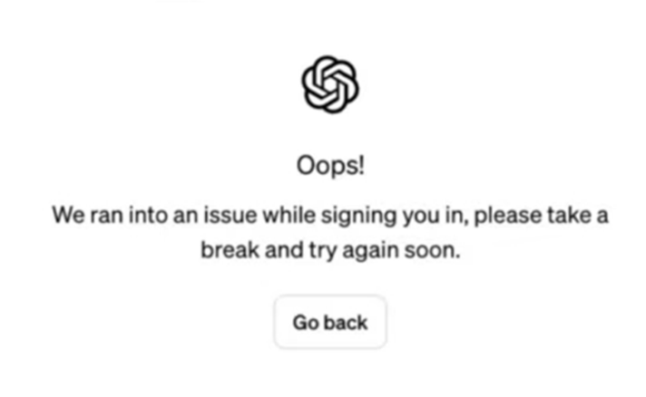
近期很多 ChatGPT 用户出现了无法登陆的情况查看大部分无法登陆的账户邮箱后缀是 @qq.com @163.com、@naver.com等，怀疑可能是ChatGPT 封锁了账户导致。
解决方案:
1.可以通过 help.openai.com 联系 OpneAl 官方，进行申诉
2.重新注册 ChatGPT 账号,建议使用Google账户登入注册(如果您已经有 Google 账户，使用Google账号登入ChatGPT可以免去手机号验证环节)
Google账户登陆步骤:
1.打开 https://chat.epenai.com/auth/legin 选择 Sign up
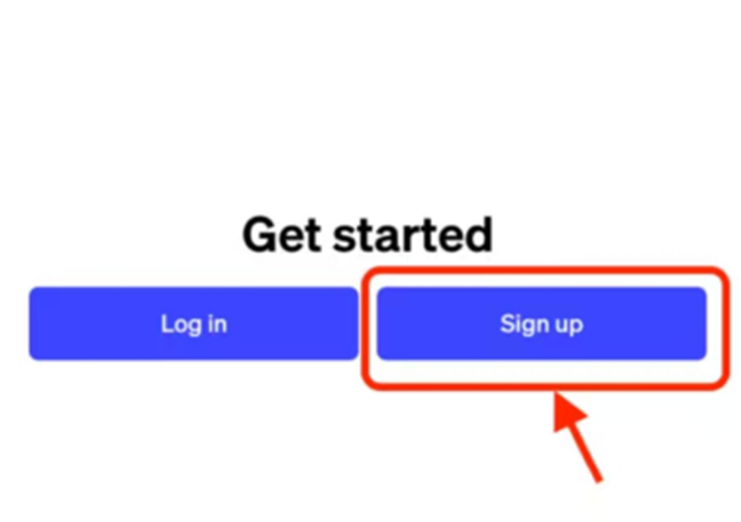
2.选择继续使用 Google
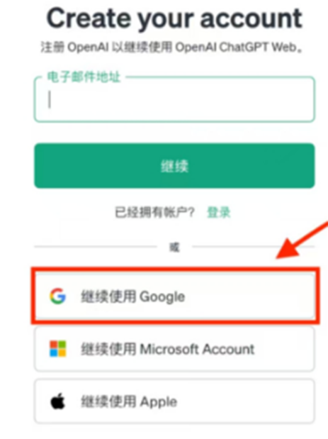
3.输入 Google 账户名，密码即可登入
注册登陆相关提示及解决方法:
Too many signups from the same lP
中文意思:来自同一IP的注册过多
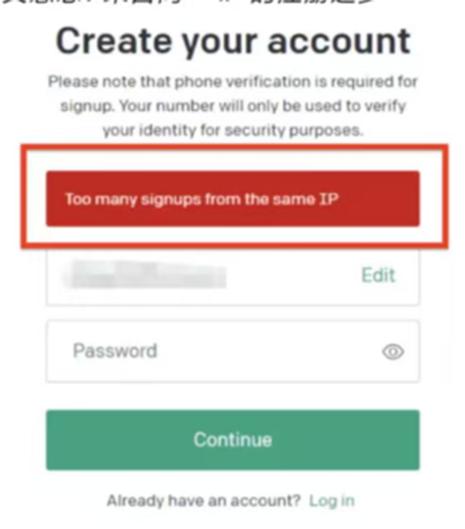
We have detected suspicious login behavior and further attempts will be blocked. please contact the administrator
中文意思:我们检到可疑的登录行为，进一步的尝试将被阻止。请联系管理员
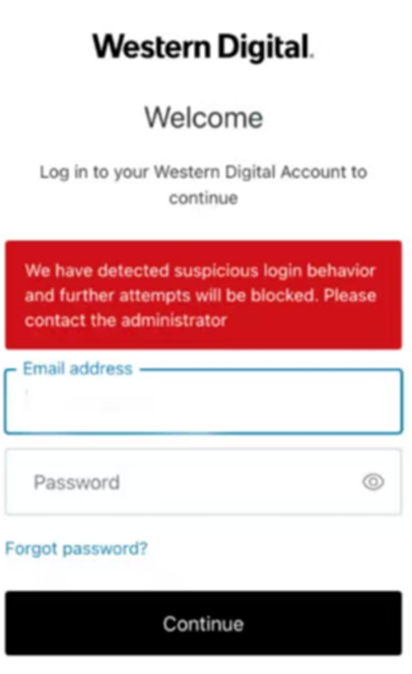
解决办法:
1.断开快连连接，选择极速模式+香港、新加坡区域重新连接
2.清除浏览器缓存，重新打开浏览器，使用无痕模式访问
3.若以上2步依然无法解决，在浏览器打开 https://chat.epenai.com/cdn-cgi/trace 将相关信息截图。连同错误提示的截图一并发送给软件内客服人员,她们会协助您解决
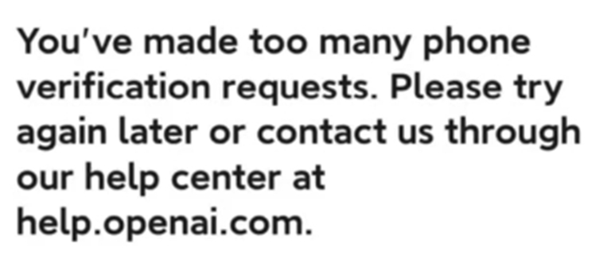
中文意思:您提出的电话验证请求过多。请稍后重试或通过我们的帮助中心 help.openai.com 与我们联系。
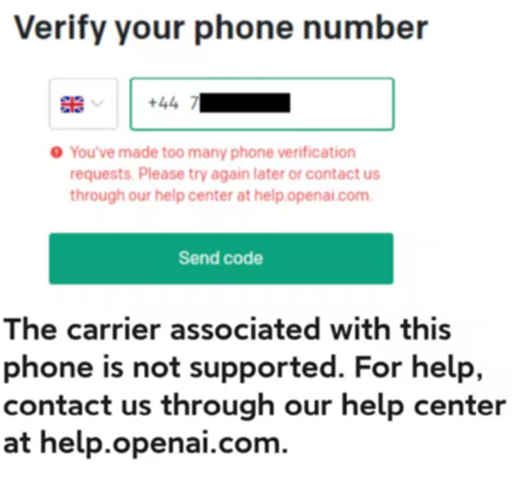
中文意思:不支持与此手机关联的运营商。如需帮助，请通过我们的帮助中心 help.openai.com 与我们联系。
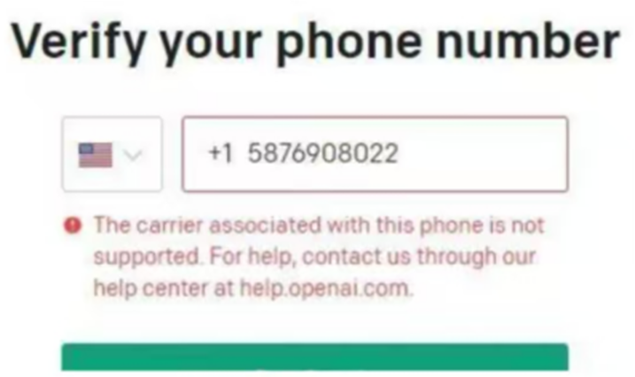
解决办法:
1.换一个接码平台或者换一个手机号再尝试注册
Your account was flagged for potential abuse.lf you feel this is an error, please contact us at help.openai.com
中文意思:您的账户被标记为潜在的滥用行为。如果你觉得这是一个错误，请联系我们
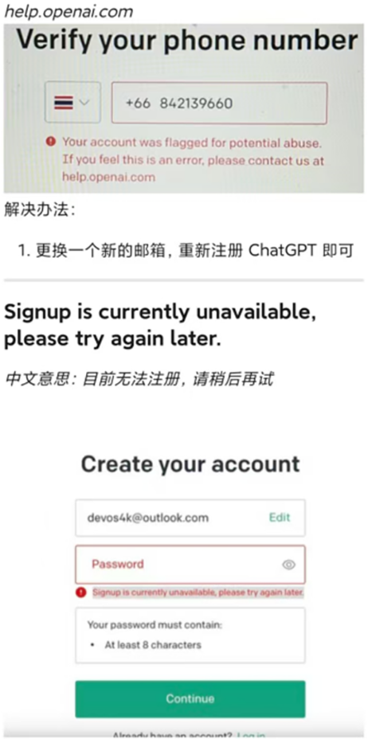
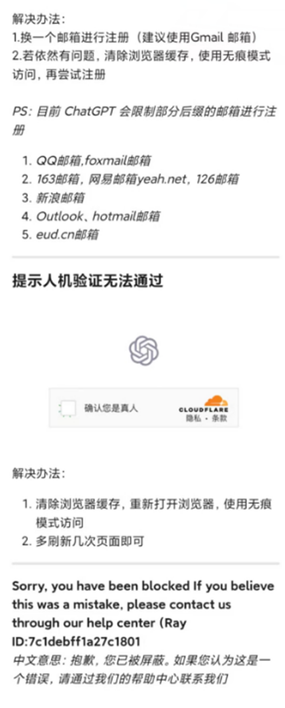
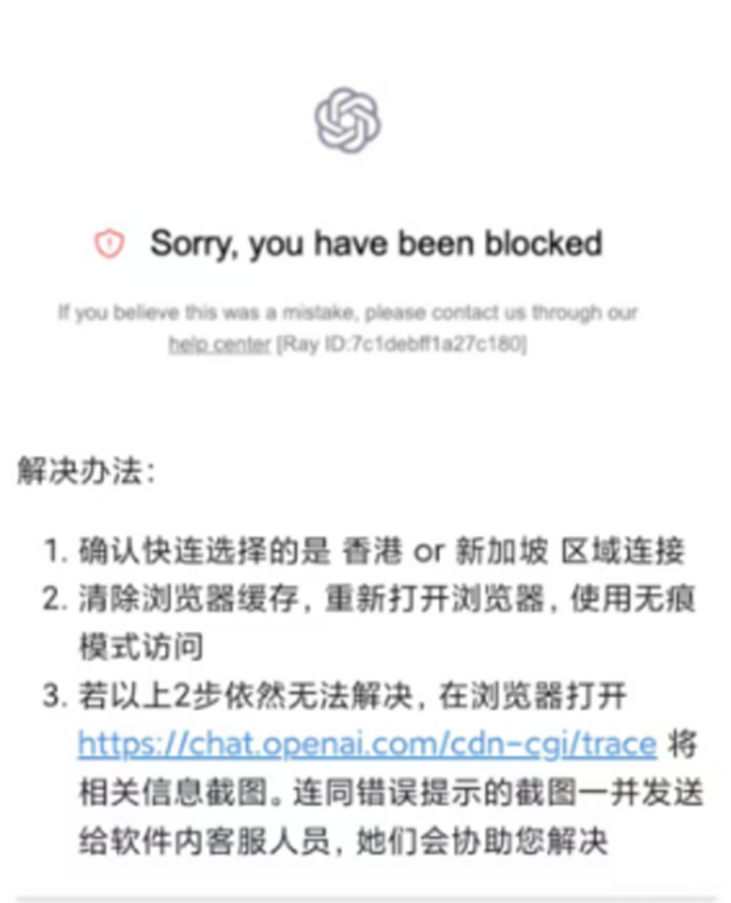
网站访问错误提示及解决方法:
our systems are a bit busy at the moment
中文意思:我们的系统现在有点忙
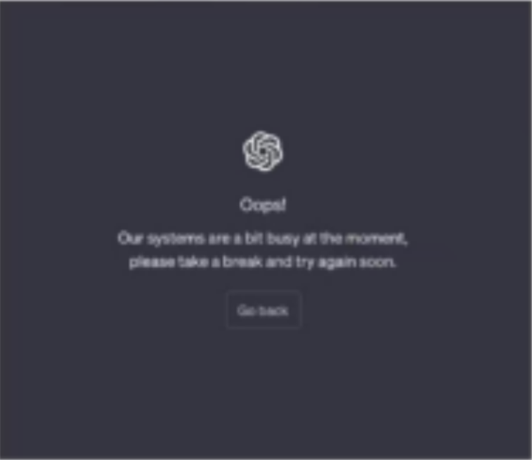
解决办法:这个问题是由于ChatGPT那边服务器繁忙导致，您可以稍等一会再进行尝试
Account deactivated. Pleasecontact us through our help centerat help.openai.com if you need assistance.(error=accountdeactivated)
中文意思:帐户已停用。如果您需要帮助，请通过我们的帮助中心 help.openaicom 与我们联系。(错误=账户-停用)
解决办法:
1.可以通过 help,openai.com 联系 OpneAI 官方，进行申诉
2.重新注册账户
PS:
浏览器使用无痕模式访问
浏览器语言修改为英文
赛盾选择香港或新加坡区域连接
不要购买批量注册的账号
不要把账号分享给其他人同时使用